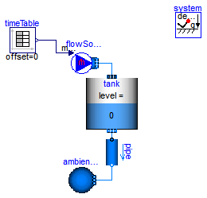
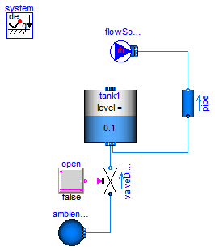
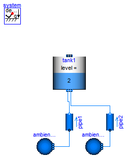
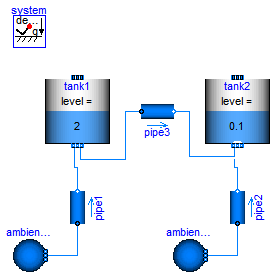
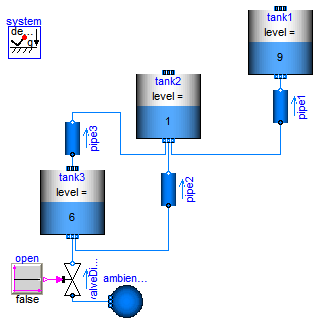

| Name | Description |
|---|---|
| Tank with one time-varying top inlet mass flow rate and a bottom outlet into the ambient | |
| Demonstrates a tank with one constant top inlet mass flow rate and a bottom outlet into the ambient | |
| Demonstrates a tank with one constant top inlet mass flow rate and a bottom outlet into the ambient | |
| Demonstrates a tank with one constant top inlet mass flow rate and a bottom outlet into the ambient | |
| Demonstrates a tank with one constant top inlet mass flow rate and a bottom outlet into the ambient |
 Modelica.Fluid.Examples.AST_BatchPlant.Test.OneTank
Modelica.Fluid.Examples.AST_BatchPlant.Test.OneTank
model OneTank "Tank with one time-varying top inlet mass flow rate and a bottom outlet into the ambient" import Modelica.SIunits.Conversions.from_bar; extends Modelica.Icons.Example;Modelica.Fluid.Examples.AST_BatchPlant.BaseClasses.TankWithTopPorts tank( redeclare package Medium = Modelica.Media.Water.ConstantPropertyLiquidWater, crossArea=1, height=1, portsData={Modelica.Fluid.Vessels.BaseClasses.VesselPortsData( diameter=0.1, height=0)}, V0=0.1, nTopPorts=1, nPorts=1, level_start=0); Sources.MassFlowSource_T flowSource(nPorts=1, redeclare package Medium = Modelica.Media.Water.ConstantPropertyLiquidWater, m_flow=20, T=system.T_ambient, use_m_flow_in=true); inner Modelica.Fluid.System system; Modelica.Fluid.Sources.Boundary_pT ambient_fixed(nPorts=1, redeclare package Medium = Modelica.Media.Water.ConstantPropertyLiquidWater, p=system.p_ambient, T=system.T_ambient); Modelica.Fluid.Pipes.StaticPipe pipe( redeclare package Medium = Modelica.Media.Water.ConstantPropertyLiquidWater, length=1, diameter=0.1, height_ab=-1); Modelica.Blocks.Sources.TimeTable timeTable(table=[0,0; 10,0; 10,40; 20,40; 20,10; 50,10; 50,0; 60,0; 60,20; 70,20; 80,55; 80,0; 100,0]); equationconnect(flowSource.ports[1], tank.topPorts[1]); connect(tank.ports[1], pipe.port_a); connect(pipe.port_b, ambient_fixed.ports[1]); connect(timeTable.y, flowSource.m_flow_in); end OneTank;
Modelica.Fluid.Examples.AST_BatchPlant.Test.TwoTanks
| Type | Name | Default | Description |
|---|---|---|---|
| Boolean | stiffCharacteristicForEmptyPort | true |
model TwoTanks import Modelica.SIunits.Conversions.from_bar; extends Modelica.Icons.Example; parameter Boolean stiffCharacteristicForEmptyPort=true;inner Modelica.Fluid.System system; Modelica.Fluid.Examples.AST_BatchPlant.BaseClasses.TankWithTopPorts tank1( redeclare package Medium = Modelica.Media.Water.ConstantPropertyLiquidWater, stiffCharacteristicForEmptyPort = stiffCharacteristicForEmptyPort, crossArea=1, height=4, level_start=3, T_start=Modelica.SIunits.Conversions.from_degC(50), nPorts=1, portsData={Modelica.Fluid.Vessels.BaseClasses.VesselPortsData( diameter=0.1, height=0)}); Modelica.Fluid.Examples.AST_BatchPlant.BaseClasses.TankWithTopPorts tank2( redeclare package Medium = Modelica.Media.Water.ConstantPropertyLiquidWater, stiffCharacteristicForEmptyPort = stiffCharacteristicForEmptyPort, crossArea=1, height=4, level_start=1, T_start=Modelica.SIunits.Conversions.from_degC(100), nPorts=1, portsData={Modelica.Fluid.Vessels.BaseClasses.VesselPortsData( diameter=0.1, height=0)}); Modelica.Fluid.Pipes.StaticPipe pipe( redeclare package Medium = Modelica.Media.Water.ConstantPropertyLiquidWater, length=1, diameter=0.1); equationconnect(tank1.ports[1], pipe.port_a); connect(pipe.port_b, tank2.ports[1]); end TwoTanks;
Modelica.Fluid.Examples.AST_BatchPlant.Test.TankWithEmptyingPipe1
model TankWithEmptyingPipe1 "Demonstrates a tank with one constant top inlet mass flow rate and a bottom outlet into the ambient" import Modelica.SIunits.Conversions.from_bar; extends Modelica.Icons.Example;Sources.MassFlowSource_T flowSource( nPorts=1, redeclare package Medium = Modelica.Media.Water.ConstantPropertyLiquidWater, m_flow=50, T=system.T_ambient); inner Modelica.Fluid.System system; Modelica.Fluid.Sources.Boundary_pT ambient_fixed(nPorts=1, redeclare package Medium = Modelica.Media.Water.ConstantPropertyLiquidWater, p=system.p_ambient, T=system.T_ambient); Modelica.Fluid.Valves.ValveDiscrete valveDiscrete( redeclare package Medium = Modelica.Media.Water.ConstantPropertyLiquidWater, dp_nominal(displayUnit="Pa") = 1, m_flow_nominal=100); Modelica.Blocks.Sources.BooleanConstant open(k=false); Modelica.Fluid.Examples.AST_BatchPlant.BaseClasses.TankWithTopPorts tank1( redeclare package Medium = Modelica.Media.Water.ConstantPropertyLiquidWater, crossArea=1, V0=0.1, height=2, level_start=0.1, nPorts=2, portsData={Modelica.Fluid.Vessels.BaseClasses.VesselPortsData( diameter=0.05, height=0), Modelica.Fluid.Vessels.BaseClasses.VesselPortsData( diameter=0.1, height=1)}, stiffCharacteristicForEmptyPort=true); Modelica.Fluid.Pipes.StaticPipe pipe( redeclare package Medium = Modelica.Media.Water.ConstantPropertyLiquidWater, length=1, diameter=0.1, height_ab=1); equationconnect(ambient_fixed.ports[1], valveDiscrete.port_a); connect(open.y, valveDiscrete.open); connect(flowSource.ports[1], pipe.port_b); connect(valveDiscrete.port_b, tank1.ports[1]); connect(pipe.port_a, tank1.ports[2]); end TankWithEmptyingPipe1;
Modelica.Fluid.Examples.AST_BatchPlant.Test.TankWithEmptyingPipe2
model TankWithEmptyingPipe2 "Demonstrates a tank with one constant top inlet mass flow rate and a bottom outlet into the ambient" import Modelica.SIunits.Conversions.from_bar; extends Modelica.Icons.Example;inner Modelica.Fluid.System system; Modelica.Fluid.Sources.Boundary_pT ambient_fixed(nPorts=1, redeclare package Medium = Modelica.Media.Water.ConstantPropertyLiquidWater, p=system.p_ambient, T=system.T_ambient); Modelica.Fluid.Examples.AST_BatchPlant.BaseClasses.TankWithTopPorts tank1( redeclare package Medium = Modelica.Media.Water.ConstantPropertyLiquidWater, crossArea=1, V0=0.1, height=2, nPorts=2, portsData={Modelica.Fluid.Vessels.BaseClasses.VesselPortsData( diameter=0.05, height=0), Modelica.Fluid.Vessels.BaseClasses.VesselPortsData( diameter=0.1, height=1)}, level_start=2, stiffCharacteristicForEmptyPort=true); Modelica.Fluid.Pipes.StaticPipe pipe1( redeclare package Medium = Modelica.Media.Water.ConstantPropertyLiquidWater, length=1, diameter=0.1, height_ab=1); Modelica.Fluid.Pipes.StaticPipe pipe2( redeclare package Medium = Modelica.Media.Water.ConstantPropertyLiquidWater, length=1, diameter=0.1, height_ab=1); Modelica.Fluid.Sources.Boundary_pT ambient_fixed1(nPorts=1, redeclare package Medium = Modelica.Media.Water.ConstantPropertyLiquidWater, p=system.p_ambient, T=system.T_ambient); equationconnect(tank1.ports[1], pipe1.port_b); connect(ambient_fixed.ports[1], pipe1.port_a); connect(tank1.ports[2], pipe2.port_b); connect(ambient_fixed1.ports[1], pipe2.port_a); end TankWithEmptyingPipe2;
Modelica.Fluid.Examples.AST_BatchPlant.Test.TanksWithEmptyingPipe1
model TanksWithEmptyingPipe1 "Demonstrates a tank with one constant top inlet mass flow rate and a bottom outlet into the ambient" import Modelica.SIunits.Conversions.from_bar; extends Modelica.Icons.Example;inner Modelica.Fluid.System system; Modelica.Fluid.Sources.Boundary_pT ambient_fixed1(nPorts=1, redeclare package Medium = Modelica.Media.Water.ConstantPropertyLiquidWater, p=system.p_ambient, T=system.T_ambient); Modelica.Fluid.Examples.AST_BatchPlant.BaseClasses.TankWithTopPorts tank1( redeclare package Medium = Modelica.Media.Water.ConstantPropertyLiquidWater, crossArea=1, V0=0.1, height=2, nPorts=2, portsData={Modelica.Fluid.Vessels.BaseClasses.VesselPortsData( diameter=0.05, height=0), Modelica.Fluid.Vessels.BaseClasses.VesselPortsData( diameter=0.1, height=1)}, level_start=2, stiffCharacteristicForEmptyPort=true); Modelica.Fluid.Pipes.StaticPipe pipe1( redeclare package Medium = Modelica.Media.Water.ConstantPropertyLiquidWater, length=1, diameter=0.1, height_ab=1); Modelica.Fluid.Pipes.StaticPipe pipe2( redeclare package Medium = Modelica.Media.Water.ConstantPropertyLiquidWater, length=1, diameter=0.1, height_ab=1); Modelica.Fluid.Sources.Boundary_pT ambient_fixed2(nPorts=1, redeclare package Medium = Modelica.Media.Water.ConstantPropertyLiquidWater, p=system.p_ambient, T=system.T_ambient); Modelica.Fluid.Examples.AST_BatchPlant.BaseClasses.TankWithTopPorts tank2( redeclare package Medium = Modelica.Media.Water.ConstantPropertyLiquidWater, crossArea=1, V0=0.1, height=2, nPorts=2, portsData={Modelica.Fluid.Vessels.BaseClasses.VesselPortsData( diameter=0.05, height=0), Modelica.Fluid.Vessels.BaseClasses.VesselPortsData( diameter=0.1, height=0.5)}, level_start=0.1, stiffCharacteristicForEmptyPort=true); Modelica.Fluid.Pipes.StaticPipe pipe3( redeclare package Medium = Modelica.Media.Water.ConstantPropertyLiquidWater, length=1, diameter=0.1, height_ab=-0.5); equationconnect(tank1.ports[1], pipe1.port_b); connect(ambient_fixed1.ports[1], pipe1.port_a); connect(ambient_fixed2.ports[1], pipe2.port_a); connect(tank2.ports[1], pipe2.port_b); connect(pipe3.port_a, tank1.ports[2]); connect(pipe3.port_b, tank2.ports[2]); end TanksWithEmptyingPipe1;
Modelica.Fluid.Examples.AST_BatchPlant.Test.TanksWithEmptyingPipe2
| Type | Name | Default | Description |
|---|---|---|---|
| Boolean | stiffCharacteristicForEmptyPort | true |
model TanksWithEmptyingPipe2
"Demonstrates a tank with one constant top inlet mass flow rate and a bottom outlet into the ambient"
parameter Boolean stiffCharacteristicForEmptyPort=true;
import Modelica.SIunits.Conversions.from_bar;
extends Modelica.Icons.Example;
replaceable package Medium =
Modelica.Media.Water.ConstantPropertyLiquidWater constrainedby
Modelica.Media.Interfaces.PartialMedium "Medium in the component";
inner Modelica.Fluid.System system;
Modelica.Fluid.Sources.Boundary_pT ambient_fixed(nPorts=1,
redeclare package Medium =
Modelica.Media.Water.ConstantPropertyLiquidWater,
p=system.p_ambient,
T=system.T_ambient);
Modelica.Fluid.Valves.ValveDiscrete valveDiscrete(
redeclare package Medium =
Modelica.Media.Water.ConstantPropertyLiquidWater,
dp_nominal(displayUnit="Pa") = 1,
m_flow_nominal=100);
Modelica.Blocks.Sources.BooleanConstant open(k=false);
Modelica.Fluid.Examples.AST_BatchPlant.BaseClasses.TankWithTopPorts tank3(
redeclare package Medium = Medium,
crossArea=1,
V0=0.1,
height=20,
nPorts=2,
portsData={Modelica.Fluid.Vessels.BaseClasses.VesselPortsData(
diameter=0.05, height=0),
Modelica.Fluid.Vessels.BaseClasses.VesselPortsData(
diameter=0.05,
height=6.5)},
level_start=6,
nTopPorts=1,
stiffCharacteristicForEmptyPort = stiffCharacteristicForEmptyPort);
Modelica.Fluid.Examples.AST_BatchPlant.BaseClasses.TankWithTopPorts tank1(
redeclare package Medium = Medium,
crossArea=1,
V0=0.1,
height=10,
nPorts=1,
portsData={Modelica.Fluid.Vessels.BaseClasses.VesselPortsData(
diameter=0.1, height=0)},
level_start=9,
stiffCharacteristicForEmptyPort = stiffCharacteristicForEmptyPort);
Modelica.Fluid.Examples.AST_BatchPlant.BaseClasses.TankWithTopPorts tank2(
redeclare package Medium = Medium,
crossArea=1,
V0=0.1,
height=10,
nPorts=3,
portsData={Modelica.Fluid.Vessels.BaseClasses.VesselPortsData(
diameter=0.05, height=0),
Modelica.Fluid.Vessels.BaseClasses.VesselPortsData(
diameter=0.05,
height=2),Modelica.Fluid.Vessels.BaseClasses.VesselPortsData(
diameter=0.1, height=3)},
level_start=1,
stiffCharacteristicForEmptyPort = stiffCharacteristicForEmptyPort);
Pipes.StaticPipe pipe1( redeclare package Medium = Medium,
height_ab=2,
length=2,
diameter=0.1);
Pipes.StaticPipe pipe2( redeclare package Medium = Medium,
height_ab=2,
length=2,
diameter=0.1);
Pipes.StaticPipe pipe3( redeclare package Medium = Medium,
height_ab=2,
length=2,
diameter=0.1);
equation
connect(ambient_fixed.ports[1], valveDiscrete.port_a);
connect(open.y, valveDiscrete.open);
connect(valveDiscrete.port_b,tank3. ports[1]);
connect(pipe1.port_b, tank1.ports[1]);
connect(pipe2.port_a, tank3.ports[2]);
connect(pipe3.port_a, tank3.topPorts[1]);
connect(pipe3.port_b, tank2.ports[1]);
connect(pipe1.port_a, tank2.ports[3]);
connect(pipe2.port_b, tank2.ports[2]);
end TanksWithEmptyingPipe2;